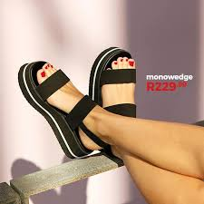
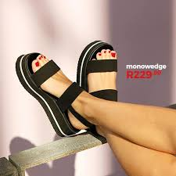
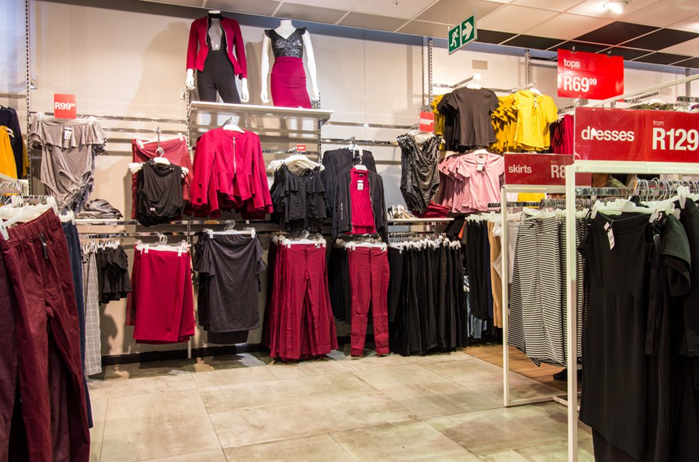

Vision
To be a top-performing omni-channel retailer.
 

Purpose
To add value to our customers’ lives and worth to our partners’ lives, while caring for the communities and environments in which we operate.
Value
Lower mark-ups and selling higher volume to offer excellent value Low overhead structure and leading operating margins support: Quality and fashion offered at the best price Lower mark-ups in order to offer EveryDay Low Prices. Large order quantities and higher sales volumes to keep input prices low. Retailing own branded merchandise. Maintain balance by including costs for future growth, often ahead of revenue generation.
Partnership
Mutual respect is integral to the culture of the group. We therefore refer to our co-workers as “associates” and, once they own shares or share options, they are referred to as “partners”. Partnership is sharing the ownership and success of the company with all our associates and fostering solid and long-term relationships with our suppliers. Without our customers, we would not have a business, and they are one of our most valued partners. We also partner with communities, by investing in strategic initiatives that will improve the lives of those who are less fortunate, particularly children and youth.


Fashion
Wanted items at EveryDay Low Prices We satisfy our customers' need for fashion through: Specialist trend teams, frequent international travel and thorough research. Active dialogues through social and digital media. Responding to customers’ changing fashion needs. Product testing before making significant merchandise commitments. Slow moving merchandise cleared to make way for fresh, new merchandise.